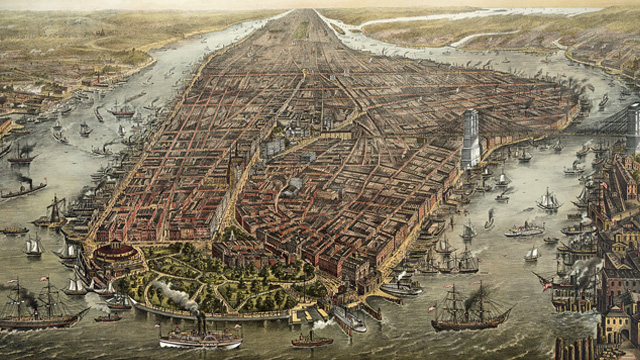
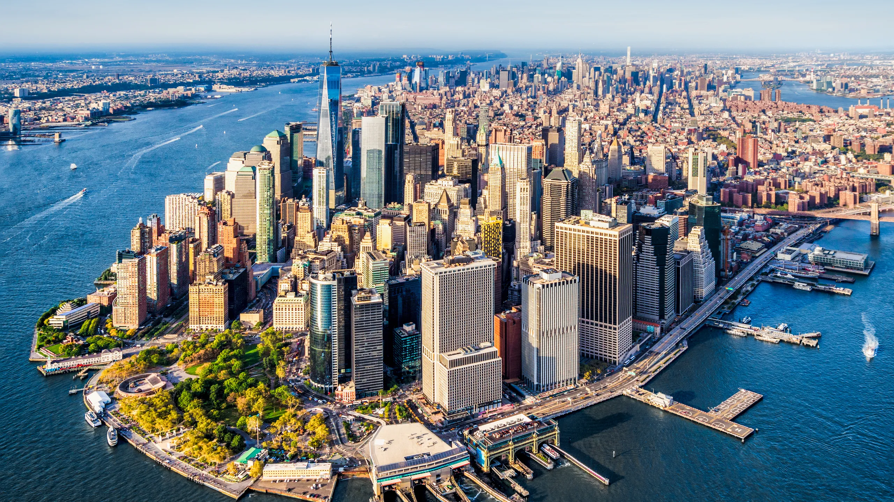

NEW YORK

New York City began as a small Dutch trading post called New Amsterdam, founded in 1624 on Manhattan Island. Its location near a deep natural harbor and major rivers made it an ideal center for trade and commerce. In 1664, the English captured the colony and renamed it New York, marking the beginning of British influence that shaped its political and economic development.

During the 19th and early 20th centuries, New York became the primary gateway for immigrants entering the United States. Millions arrived through nearby Ellis Island, bringing languages, traditions, and skills that transformed the city into one of the most culturally diverse places in the world. Neighborhoods formed around ethnic communities, contributing to the city’s rich cultural identity.

In the 20th century, New York emerged as a global powerhouse in finance, media, and culture. Wall Street became the center of international finance, while Broadway, publishing, and film industries shaped global entertainment. Today, New York City is considered one of the most influential cities in the world, known for its skyline, diversity, and cultural impact.